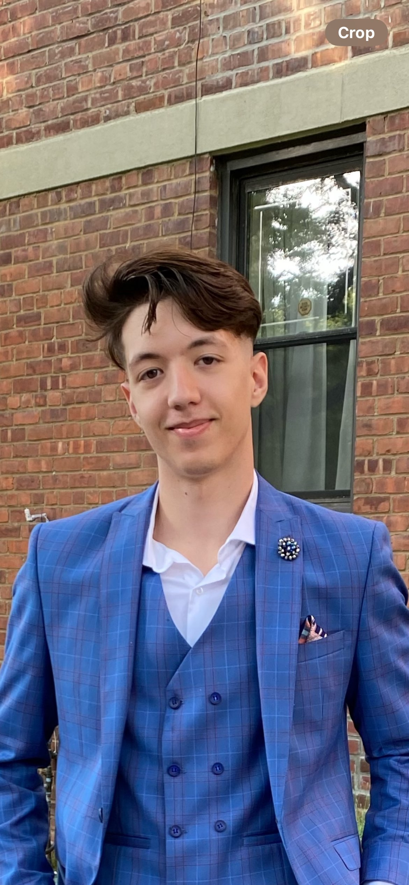

Arian Berisha
Pelham Parkway, Bronx NY 10467
Computer Science student with strong academic foundation and hands-on experience in cloud platforms, SQL, and software
development. Proven ability to work in fast-paced team environments and deliver reliable solutions. Seeking an internship to apply
and deepen skills in cloud engineering, AI/ML, or cybersecurity.
B.A, Computer Science, Hunter College, 08/2026
GPA: 3.7
Associate in Applied Science, Computer Science, The City College of Technology, 06/2024
GPA: 3.7
Data Structures & Algorithms, Programming Languages, Software Design Laboratory, Discrete Structures, Probability & Statistics for
CS, Fundamentals of Computer Systems, Linear Algebra, Calculus I, II, III, C++ Programming I & II, Database Systems
Fundamentals, Algorithms
| Programming Skills |
Cloud |
Tools |
Tech |
Languages |
Java
HTML
SQL
PostgreSQL
Oracle
C
C#
C++
Python
Bash
Shell Scripting |
Microsoft Azure
IBM Cloud
AWS |
Git
Visual Studio Code
REST APIs
TailwindCSS
Astro
MATLAB |
Agile Development
CI/CD
IoT
AI Applications
Virtual Machines
Cybersecurity Basics |
English
Albanian |
IBM TechXchange WatsonX Hackathon | May 2025 - August 2025
- Selected from a national pool of 2,000+ applicants to participate in IBM’s AI Agent Hackathon.
- Collaborated in a 5-person team to develop FloodWise, an AI safety assistant using IBM WatsonX Orchestrate, designed to support
emergency planning in urban/rural zones.
- Led blueprint planning and prompt engineering efforts, improving system accuracy by over 30% during test phases.
- Conducted 3 successful beta deployments in under 48 hours, with consistent uptime and correct decision-tree execution.
- Gained hands-on experience in zero-code AI workflows, agile sprint cycles, and scalable AI planning.
Cloud & IoT Research Intern– CRSP Program, City College of Tech. | September 2023 - July 2024
- Conducted a year-long independent research study on IoT sensor data collection, storage, and processing across major cloud
platforms: Microsoft Azure, AWS, and IBM Cloud.
- Designed and simulated test environments for data ingestion pipelines handling up to 5GB/day of synthetic IoT data from simulated
smart devices.
- Benchmarked cloud tools (e.g., AWS Kinesis vs. IBM Streams vs. Azure Event Hubs) to evaluate latency, cost-efficiency, and
throughout, finding Azure outperformed AWS by 18% in data retrieval time, while AWS proved 22% more cost-effective for batch
storage.
- Sole student researcher under 1 faculty mentor; presented findings to 50+ faculty, students, and researchers across 2 symposiums
during CRSP Research Day.
- Received a $2,000 research stipend for completion and excellence in technical communication and research execution.
- Built a fully responsive personal website using Astro and TailwindCSS; currently showcases resume, project links, and GitHub
activity.
- Achieved mobile optimization for 95%+ of screen sizes using utility-first CSS classes.
- Iterated over 3 design versions based on feedback to enhance load time, UI simplicity, and accessibility
Java Course Project – User Account Management System | January 2025 - May 2025
- Contributed to the development of a full-stack Java application managing 50+ simulated user accounts as part of a capstone class
project
- Designed and implemented back-end logic for account creation, validation, and authentication using OOP principles
- Collaborated with 4 classmates using GitHub and followed Agile practices; achieved a 97% project grade and peer praise for code
readability and functionality
- Ensured 100% functional coverage in final system tests before deployment and archiving.
Arian Berisha, Dean’s List, College of Technology 2022-2023